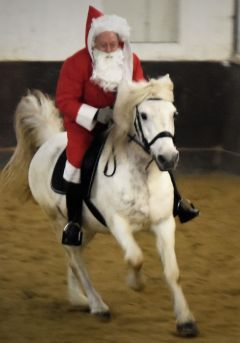
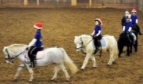
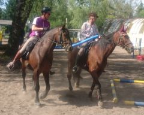
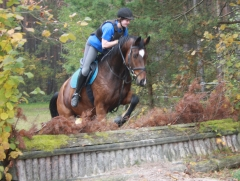

| Verladeraining 2025 Mit kompetenter Anleitung von Janina Lederer |
|
| Dreikönigstunier 2025 Mit tollen Fotos von Volker Liebig |
|
| Fasching 2023 Faschingsreiten super organisiert von Conny |
|
| Dreikönigs-Turnier 2023 Mit Bildern von Luca Weith |
|
| Weihnachtsreiten 2022 Mit Bildern von Doris Frank-Schneider |
 |
| Reitabzeichen 2022 Nach zwei Jahren Corona-Pause endlich wieder! |
|
|
Reitwegpflege 2021/2022 Die Pandemie-Zeit haben wir für die Reitwegpflege genutzt |
|
| Fasching 2020 |
|
| Weihnachtsreiten 2019 Tolle Billder von Doris Frank-Schneider |
 |
| Musikreiten Februar 2019 Tolle Billder von Sanya Schreiner |
|
| Fasching 2018 Mit wunderbar knusprigen Schäufele vom Partyservice Feinkostmetzgerei Mai |
 |
| Weihnachtsreiten 2017 Mit großer Quadrille, beieindruckendem Freispringen, herrlichem Ponyfreilauf und springenden Weihnachtsmännern! |
|
| Orientierungsritt Juli 2017 Einmal rund um den Flughafen Nürnberg Erster Preis war eine Ballonfahrt gesponsort vom Flughafen! |
 |
| Arbeitsdienst April 2017 Mit Nicols tollem Kärcher!!! |
 |
| Erste Hilfekurs März 2017 Erstmals fand ein solcher Kurs beim RCM statt. Nun wissen wir was in Notfall zu tun ist! Vielen Dank an Anja von den Johannitern! |
|
| Fasching 2017 Lustig wie immer! Faschingsreiten mit Evelyn und Kerstin Faschingsfeier mit Jil und Michèle |
|
| Frühjahrs-Schleppjagd Mai 2016 bei sonnigem Wetter und großem Jagdfeld mit der Vogelsbergmeute und Jagdherrin Maion Knoche |
|
| 60er Geburtstag von Alfred Schmitt Vierspännig gefahren von Willi Schuh |
|
| Reit- und Carnevalsverein Marienberg Tolle Faschingsfeier mit Siggi und Faschingsreiten mit Mareike, Kerstin und Evelyn |
 |
| Neujahrsquadrille
und Sprung ins neue Jahr 2016 Mit ganz kleinen bis ganz großen Sprüngen! |
|
| Weihnachtsreiten
2015 Mit Gästen vom Voltigierverein Büchenbach |
|
| Turnier
2015 Im September gab es das große RCM-Turnier |
 |
| Fasching
2015 Party und Faschingsreiten! |
 |
| Turnier
Okt. 2014 Tolle Springbilder |
|
| Tag
der offenen Tür Mai 2014 Abwechslungsreiches Programm und viele Besucher |
|
| Reiterabzeichen
Mai 2013 Kleines - Bronze - Silber und alle haben bestanden! |
|
| Faschingsreiten
2013 Dank Anne zum ersten mal mit Faschingsreit-Schleife!! |
|
| Weihnachtsreiten
2012 Mit Dressurquadrille, Jugendquadrille und Springen. |
|
| Geländespringen
Okt. 2012 Unsere Springreiter waren in der Sandrgube bei Heroldsbach zum üben. |
 |
| Reitweg-Eröffnung
20. 7. 2012 Bürgermeister Horst Förther eröffnet den hart erkämpften neuen Reitweg. |
|
| Koppeldienst
April 2012 Zäune Reparieren mit Siggi und super Motivation und toller Stimmung |
|
| Faschingsreiten
2012
Mit
Anne und Katja und einer |
|
| Springkurs
Februar 2012
Mit Franz-Xaver Breindl |
|
| Fasching
2012
Lebt denn der alte Holzmichel noch? |
|
| Weihnachtsreiten
Dez. 2011.
Wie immer am vierten Advent |
|
| Übungsspringen
Dez. 2011...
...über die Mauer |
|
| Hanni
und Nanni Feb. 2011
Unsere
beiden Ponys wurden mit |
|
| Pferdedemo
27. Nov. 2010
Die
Interessengemeinschaft Reitwege |
|
| Tag
der offenen Stalltür 2010
Bei
unseren kleinen Gästen kam |
|
| Mairitt
2010
Bei
herrlichen Wetter gings zu einer |
|
| Herbstjagd
2009
Unsere
Jagd fand wieder mit dem |
|
| Tag
der offenen Stallür 2009
Viele
Besucher sahen unsere |
|
| Turnier
2009
Unter
der Schirmherrschaft von |
|
| Jugendzeltlager
2009
Zum
letzten mal fand das Zeltlager |
|
| Sonnwendfeier
2009
Trotz
eines sintflutartigen Unwetters |
|
| Reiterralley
2009
Bei
herrlichen Maiwetter hatten |
|
| Mairitt
2009
Der
Maiausritt führte uns heuer |
|
| Reitabzeichen 2009
Wir
gratulieren den erfolgreichen |
|
| Fasching
2009
Vergnügliches
für Pferd |
|
| WBO-Turnier
2009
Erstmals
nach der neuen Turnier- |
|
| Zweitagesritt August
2008 Der Zweitagesritt führte uns wieder einmal nach Röckenhof, wo wir auf Siggis schöner Koppel übernachteten. |
|
| Jugendausritt Sept.
2008 Bei einem Ritt durch den Reichswald sammelten unsere Jugendlichen erste Erfahrungen im Gelände. |
|
| Reiterspiele Sept. 2007
Unsere Reiterspiele fanden wegen unstabiler Wetterlage diesmal in der Halle statt, was der Stimmung aber keinen Abbruch tat. |
|
| Ritt in den Mai 2006
Unser Mairitt fand dieses mal schon am 30. April statt und führte uns zur Rast in eine Lichtung des Heroldsberger Waldes. |
|
| Geländespringübung
Okt. 2005 in der "Sandgrube" bei Schloss Thurn |
 |
| Geländespringübung
Juli 2005 in der "Sandgrube" bei Schloss Thurn |
|